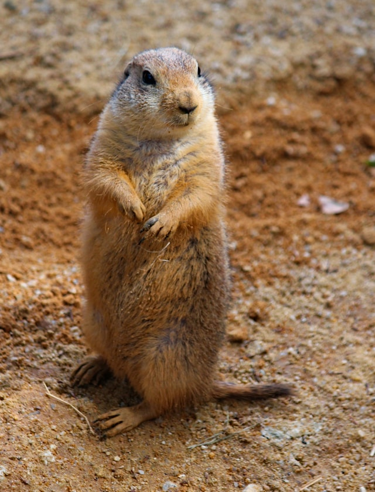
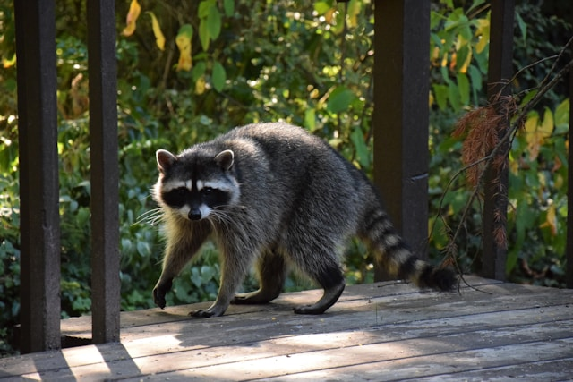

Prairie dogs (genus Cynomys) are herbivorous burrowing ground squirrels native to the grasslands of North America. There are five recognized species of prairie dog: black-tailed, white-tailed, Gunnison's, Utah, and Mexican prairie dogs.[3] In Mexico, prairie dogs are found primarily in the northern states, which lie at the southern end of the Great Plains: northeastern Sonora, north and northeastern Chihuahua, northern Coahuila, northern Nuevo León, and northern Tamaulipas. In the United States, they range primarily to the west of the Mississippi River, though they have also been introduced in a few eastern locales. They are also found in the Canadian Prairies. Despite the name, they are not actually canines; prairie dogs, along with the marmots, chipmunks, and several other basal genera belong to the ground squirrels (tribe Marmotini), part of the larger squirrel family (Sciuridae).
Prairie dog

Raccoon
The raccoon, sometimes called the North American, northern or common raccoon (also spelled racoon)[3] to distinguish it from other species of raccoon, is a mammal native to North America. It is the largest of the procyonid family, having a body length of 40 to 70 cm (16 to 28 in), and a body weight of 5 to 26 kg (11 to 57 lb). Its grayish coat mostly consists of dense underfur, which insulates it against cold weather. The animal's most distinctive features include its extremely dexterous front paws, its facial mask, and its ringed tail, which are common themes in the mythologies of the Indigenous peoples of the Americas surrounding the species. The raccoon is noted for its intelligence, and studies show that it can remember the solution to tasks for at least three years. It is usually nocturnal and omnivorous, eating about 40% invertebrates, 33% plants, and 27% vertebrates.
